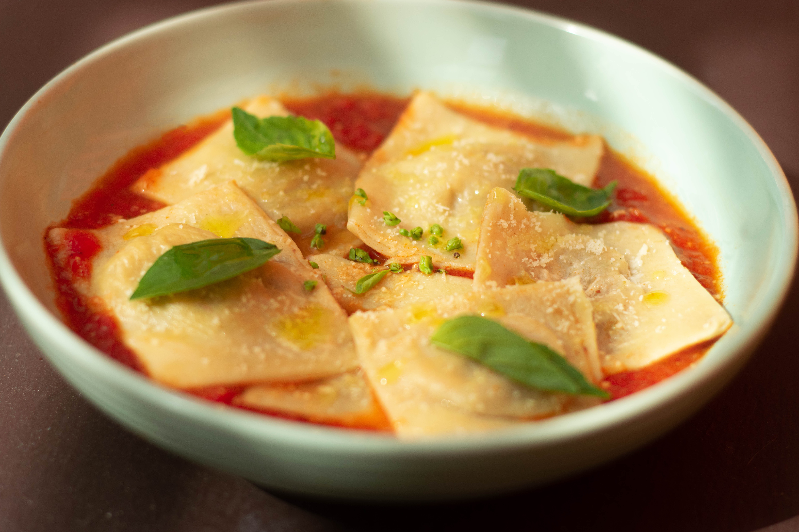
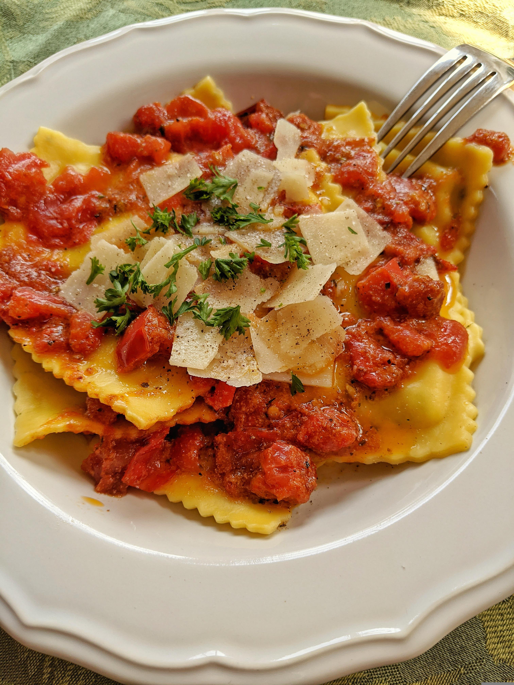
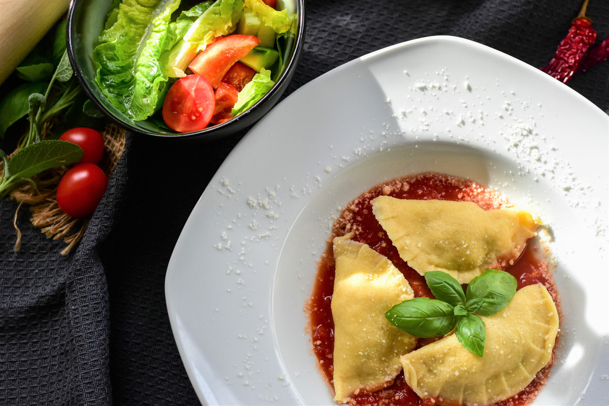

Site Links:
(Back to Home) |
(Credits) |
(Disclaimer)
Recipes:
(Fettuccine Alfredo) |
(Four-Cheese Ravioli) |
(Gnocchi) |
(Lasagna)

A delicious type of Italian stuffed pasta consisting of a filling enveloped in pasta dough, served with sauce or broth.
Ravioli has roots in ancient Mediterranean cultures. In Italy, it started taking recognizable shape during the 14th century, when it was a square of pasta filled with meat, chease, and herbs. The dish was boiled, then served with a sauce. This dish exploded in popularity, its form adapting wildly to the availability of local ingredients as it spread throughout the region.
It has become something of an icon, and, now, a symbol, as it has transcended its status as just a food and become a representative of Italy itself. The preparation of the dish was a community exercise, bringing families together in the kitchen. Its creation was viewed as a labor of love, and a something to pass down through the generations. When Italians emigrated to America, they brought the dish with them, and, as before, its form adjusted to suit the ingredients of the time and place. Now, it is common to see ravioli stuffed with lobster, truffle, and even pumpkin.
When pasta cooks, the air inside the dough expands, causing it to float on top of the water.

